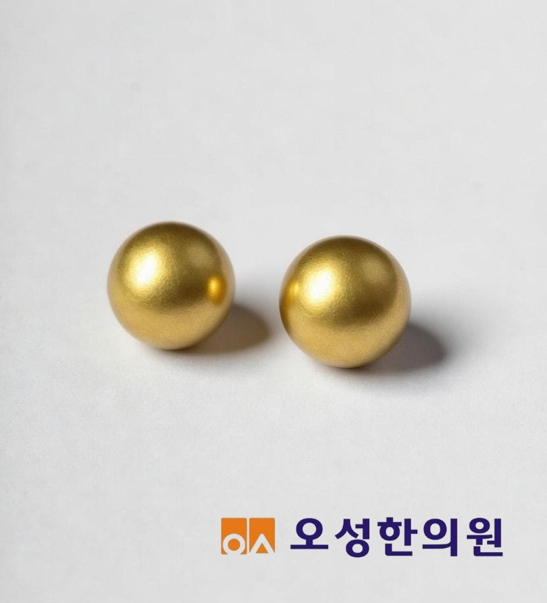
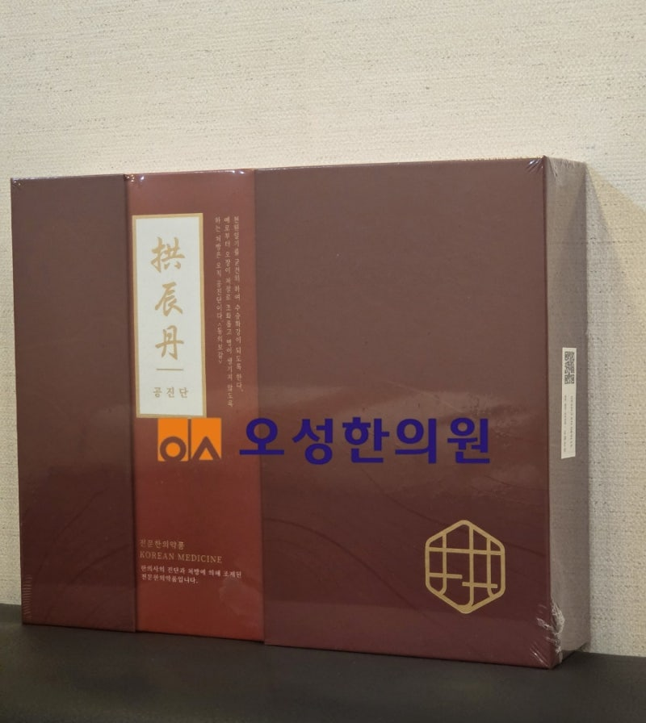

사향공진단
사향은 사향노루 수컷의 향낭에서 얻는 동물성 생약입니다. 특유의 향을 지니며 전통적으로 공진단의 중요한 약재로 사용되어 왔습니다. 사향 사용 여부와 함량, 전체 원료 구성에 따라 차이가 있을 수 있습니다.
사향이 들어갔다는 사실만으로 모든 사람에게 더 적합하다고 정하지는 않습니다. 복용하려는 목적과 지금의 몸 상태를 함께 살펴 처방 방향을 의논합니다.
사향공진단과 침향공진단의 차이부터
지금의 몸 상태에 맞는 처방 상담까지.
오성한의원에서 차근차근 안내합니다.

공진단은 전통적으로 체력이 떨어지거나 허약한 상태를 살펴 보약으로 활용해 온 한약 처방입니다. 충분히 쉬어도 피로가 남거나 과로가 반복되고, 예전보다 회복이 더디다고 느낄 때 공진단 상담을 찾는 분들이 있습니다.
전통적인 공진단은 녹용·당귀·산수유와 함께 사향을 사용하는 처방으로 알려져 있습니다. 침향을 활용한 공진단은 주요 약재가 달라집니다. 같은 이름만 보고 고르기보다 어떤 구성이며 무엇을 위해 복용하려는지 확인하는 것이 중요합니다.
오성한의원은 공진단을 찾게 된 이유와 현재의 몸 상태를 먼저 듣습니다. 피로가 얼마나 이어졌는지, 수면과 식사는 어떤지, 평소 생활 패턴은 어떤지를 살피고 문진과 진맥을 함께 진행합니다. 공진단이 적합한지부터 확인하는 과정입니다.
가장 큰 차이는 주요하게 사용하는 약재입니다. 원료의 기원과 전체 구성을 이해하고 현재 상태에 맞는 방향을 상담합니다.
사향은 사향노루 수컷의 향낭에서 얻는 동물성 생약입니다. 특유의 향을 지니며 전통적으로 공진단의 중요한 약재로 사용되어 왔습니다. 사향 사용 여부와 함량, 전체 원료 구성에 따라 차이가 있을 수 있습니다.
사향이 들어갔다는 사실만으로 모든 사람에게 더 적합하다고 정하지는 않습니다. 복용하려는 목적과 지금의 몸 상태를 함께 살펴 처방 방향을 의논합니다.
침향은 침향나무에서 만들어지는 향기로운 수지를 포함한 식물성 약재입니다. 나무에 수지가 오랜 시간 축적되며 만들어집니다. 사향과는 기원부터 다른 약재이며, 침향공진단은 사향 대신 침향을 주요 약재로 구성한 형태입니다.
침향공진단도 단순히 가격만으로 고르기보다 어떤 구성인지, 어떤 목적으로 복용하려는지 살펴봅니다. 오성한의원에서는 현재 상태를 확인한 뒤 침향을 활용한 구성을 상담하고 처방합니다.
원료의 이름이나 가격보다 중요한 것은 지금 내 몸에 맞는 구성인지입니다. 공진단보다 맞춤 한약이 더 적합한 경우에는 다른 처방 방향도 함께 고려합니다.

오성한의원 블로그에서는 스틱형 침향공진단을 소개하고 있습니다. 복용에 대한 부담과 피로의 양상, 소화 상태 등을 진맥과 상담에서 함께 살펴 안내합니다.
피로의 원인과 양상은 사람마다 다릅니다. 다음과 같은 불편을 느낀다면 현재 상태와 복용 목적을 함께 이야기해 볼 수 있습니다.
잠을 자고 휴식을 취해도 아침부터 몸이 무겁고 개운하지 않은 경우입니다.
업무와 육아 등 정신적·육체적 활동이 계속되며 체력이 떨어졌다고 느끼는 경우입니다.
하루 무리한 뒤 컨디션을 되찾는 데 며칠이 걸리고, 피로가 오래 남는 경우입니다.
이전과 같은 생활에도 더 쉽게 지치면서 자신에게 맞는 보약을 알아보는 경우입니다.
이런 상황에 해당한다고 모두 공진단이 필요한 것은 아닙니다. 피로가 생긴 배경과 몸 상태를 살펴 적합한 처방인지 판단합니다.
피로가 이어진 기간과 수면·식사 상태, 평소의 체력과 생활 패턴, 공진단을 찾게 된 이유를 확인합니다.
진맥은 문진과 함께 전반적인 상태를 파악하는 과정 중 하나입니다. 한 가지 정보만으로 판단하지 않고 현재의 상태를 함께 이해합니다.
사향·침향을 활용한 구성이나 다른 맞춤 한약의 필요성을 살펴봅니다. 복용 목적과 현재 상태에 맞는 방향을 안내합니다.
기존 질환이나 복용 중인 약이 있다면 상담할 때 알려주세요. 몸 상태와 현재 컨디션을 고려해 복용 시기와 기간을 개인별로 의논합니다.
몇 환을 먹으면 피로가 완전히 사라진다고 획일적으로 정하지는 않습니다. 수개월 동안 피로가 계속되거나 체중·식욕 변화, 심한 어지럼이나 숨참·두근거림 등이 함께 있다면 보약만 생각하기보다 다른 원인도 확인할 필요가 있습니다.
공진단에 관한 설명을 홈페이지 건강칼럼에서 이어서 읽을 수 있습니다.
이 안내는 오성한의원 블로그 원문을 바탕으로 정리했습니다.
공진단의 구성과 처방 상담이 궁금하다면 전화로 문의해 주세요.
파주시 조리읍 봉천로 35-1, 올리브영 2층
평일 09:00–18:00 · 토요일 09:00–13:00
점심 13:00–14:00 · 일요일·공휴일 휴진